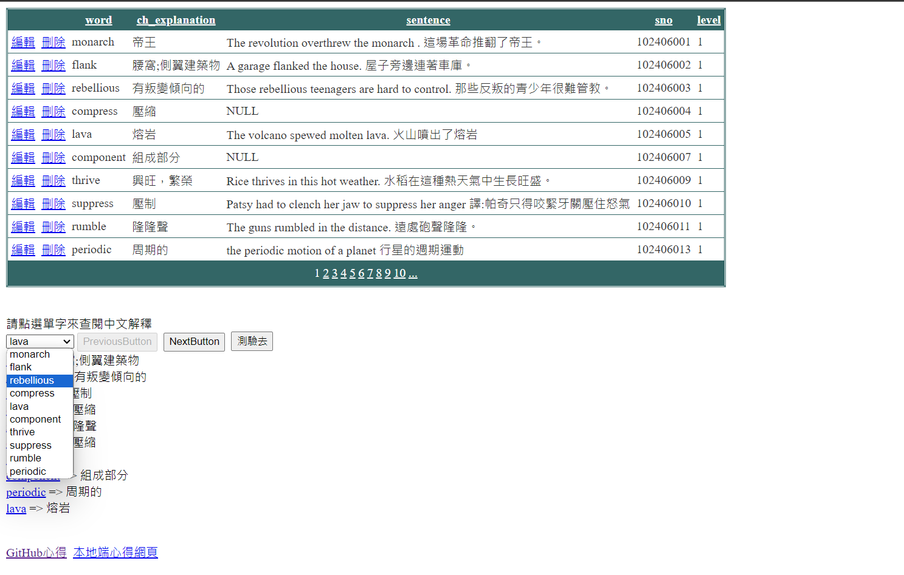
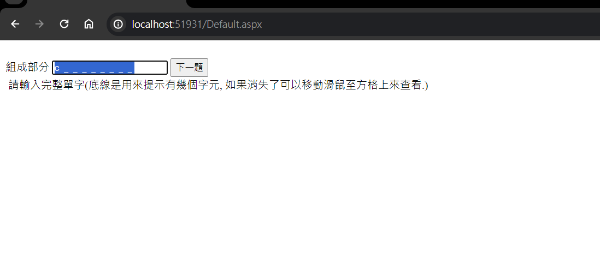
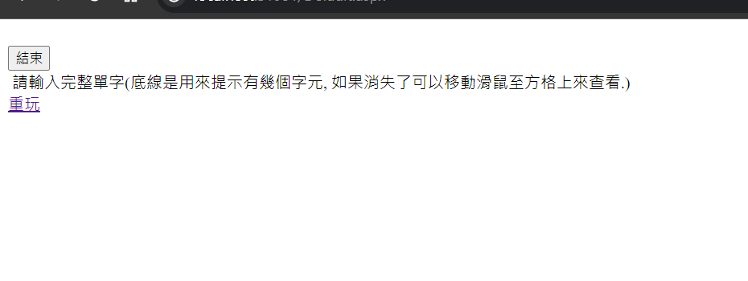

GEPT Words 單字測驗 ASP.NET 程式開發心得
作者：CBF110040 張榆蓁
開發思路與解決方案
我首先確定這個專案的需求和目標，熟讀題目要求，這是一個單字測驗的程式，有許多細節，比如以gridview分頁顯示資料表內容(請不要顯示 id欄位), 並允許編輯與刪除資料。
出題時需要實現隨機排序題目(洗牌演算法)的功能，並且可以讓使用者進行單字測驗，並且即時顯示正確答案和得分。
刪除資料前會先跟使用者做確認，還有 GridView刪除資料時要會反應至DropDownList. 按鈕會依目前是最後一頁或第一頁來呈現可按或不可按狀態等等。
開發過程
我依照題意，一題一題慢慢來，在開發過程中，我首先將資料庫匯入功能完成，透過 ASP.NET 提供的功能將資料庫中的單字顯示在 GridView 上。
接著，設計了各按鈕功能與互動，讓使用者可以按需顯示特定數量(前十個、後十個)的單字。我也實現了測驗功能，讓使用者可以在不使用滑鼠的情況下進行測驗。
還有各項功能，點選DropDownList中的項目時，下方會顯示對應的中文解釋，以及可以連結到cambridge字典，方便使用者查詢該單字。
按下"測驗去"按鈕後會進入測驗，測驗題目為最近在DropDownList中呈現的單字。題目會呈現中文解釋及英文首字元及底線提示有幾個字元。
但在開發過程中，在面臨資料庫匯入時進度就有一點小卡，匯入花了比較長時間，包括將 gept_words.xls 匯入資料庫的處理。
而還有在洗牌演算法上花了一點時間修正使他可以執行，但還有幾個功能嘗試了好幾次後依舊無法成功。
解決策略
為了解決遇到的問題，我參考了網路資料、教授的課堂教學影片以及之前的小考，並深入研究了 ASP.NET 的資料繫結和各個控制項操作方式。
無法執行時一行一行仔細檢查哪裡出問題，針對問題做修改。
使用的技術與引用來源
在這裡，你可以列出你在開發過程中使用到的技術，以及你參考的資料來源。
使用的技術
在開發過程中，我主要使用了 ASP.NET、C#、SQL Server 資料庫、SQL 資料庫連接與操作、 和 CSS。
引用的資源
網路資料、教授的課堂教學影片
遇到的問題與解決方法
在這裡，你可以分享你在開發過程中遇到的問題，以及你是如何解決這些問題的。
遇到的問題
想要十題測驗完之後，結束"按鈕"出現並且畫面不要顯示"下一題"按鈕，一開始不太確定怎麼做。
解決的方法
查閱網路資源慢慢修改
修改後的程式內容
在這裡，你可以分享你修改後的程式碼，並解釋你做了哪些改變。
修改的部分
我添加了以下程式碼使得按鈕可以出現或隱藏。
程式碼說明
protected void CBF110040_nextQBtn_Click(object sender, EventArgs e)
{
if (CBF110040_DDL1.SelectedIndex < CBF110040_DDL1.Items.Count - 1)
{
CBF110040_DDL1.SelectedIndex += 1;
CBF110040_testBtn_Click(sender, e); // 自動觸發顯示題目內容的方法
}
else
{
// 如果已經是最後一題，這裡可以執行其他操作或者提示訊息
// 顯示按鈕和隱藏下一題按鈕
Button1.Visible = true; // 顯示結束按鈕
CBF110040_nextQBtn.Visible = false; //隱藏下一題按鈕
}
}
程式執行畫面
在這裡，你可以分享你的程式執行畫面，並解釋每個畫面的功能。
功能介紹
進入起始網頁時，會看到一個顯示單字的表格，這個表格可以讓你編輯和刪除單字，但在刪除之前會有一個確認提示。
你也可以使用一個下拉選單來看十個單字，並且有按鈕查看下一組或上一組，當你選擇下拉選單中的單字時，會在下方顯示對應的中文解釋以及連結。
當進入測驗時，可以作答，題目會呈現中文解釋及英文首字元及底線提示有幾個字元。答完所有題目後，你可以看到你的得分。
最後，你可以點擊"結束"按鈕來結束整個程式，或者點擊"重玩"連結重新開始整個過程。
畫面展示



個人心得與反思
在這裡，你可以分享你對於這次開發經驗的感想，以及你從中學到了什麼。
學習心得
通過這個專案，我更深入地了解了ASP.NET框架的運作原理、洗牌演算法的原理和效能問題。
更熟悉了如何在ASP.NET中實現基本的資料操作和控制項使用，因為此專案有著許多功能需求，所以需要仔細並且盡量達成，同一個功能可能有不同程式碼可以實現，所以就慢慢試，找到最適合或是自己比較熟悉的使用。
過程中有出現好幾次錯誤、執行結果跑不出來等等，我會立即找資料以及查看教授影片，而同時也是在為自己複習、加深印象，讓自己更加熟悉，之後若需要類似的功能時就可以馬上打出相對應的程式碼。
未來展望
未來，希望可以進一步拓展自己的前端開發技能，以及深入了解更多的資料庫操作技術，這樣能夠更全面地應對複雜的網頁應用開發挑戰。